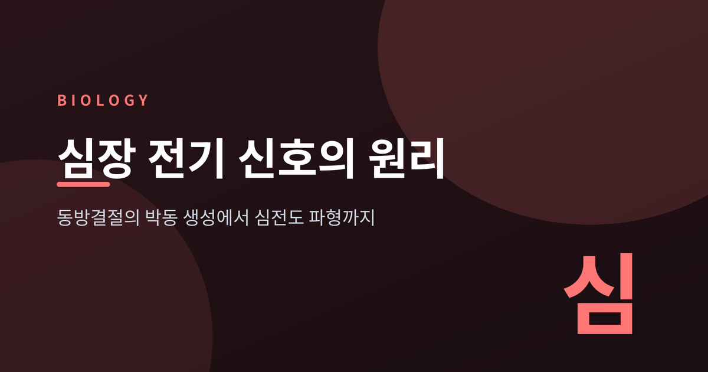
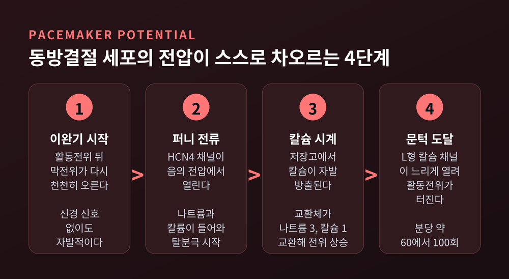
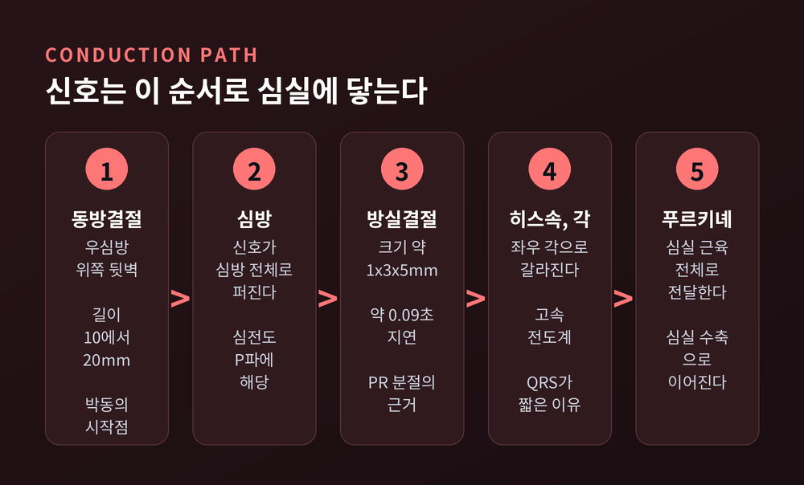
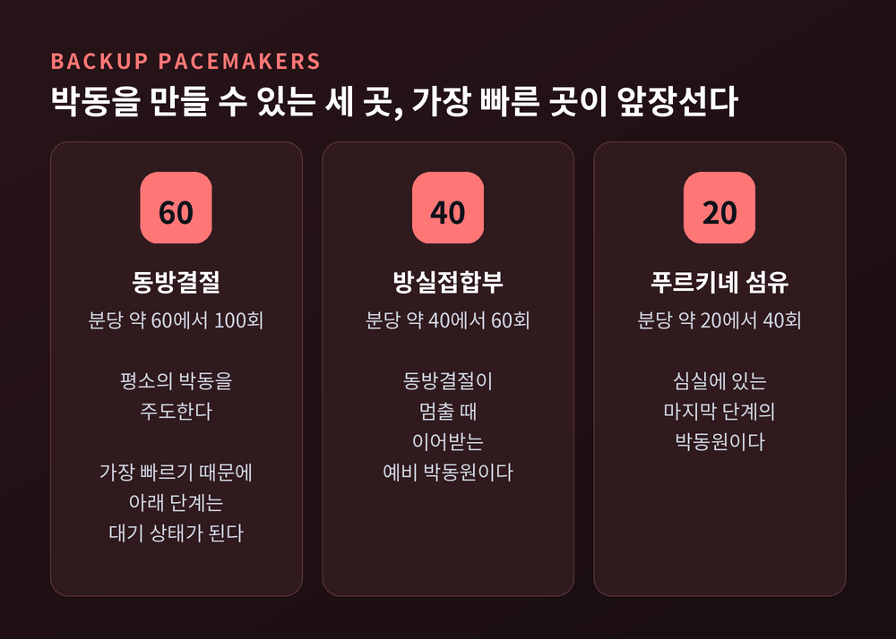
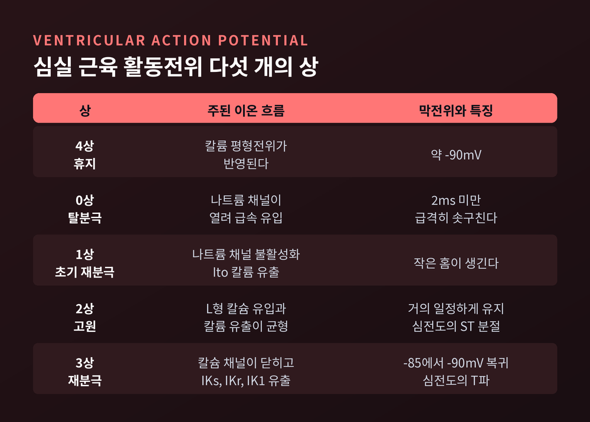
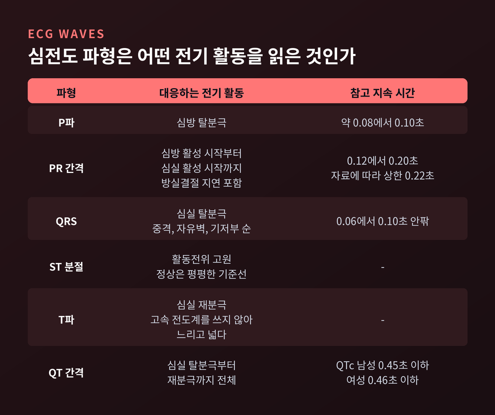

심장 전기 신호의 원리, 동방결절의 박동 생성에서 심전도 파형까지
오늘은 심장이 스스로 박동을 만들어 내는 원리를 이야기해 보려 합니다. 우심방의 작은 세포 덩어리에서 시작된 전기 신호가 어떤 길을 지나 심실에 닿는지, 그리고 그 과정이 심전도의 P, QRS, T라는 파형으로 어떻게 읽히는지 순서대로 따라가 보겠습니다. 의학 정보는 교양 수준의 원리 설명이며, 진단이나 치료를 위한 글은 아닙니다.

심장은 신호를 기다리지 않습니다
팔다리 근육은 뇌가 명령을 보내야 움직입니다. 심장은 다릅니다. 신경 신호 없이도 스스로 박동을 만들 수 있습니다.
그 박동을 만드는 곳이 동방결절입니다. 우심방 위쪽 뒷벽, 상대정맥이 들어오는 자리 옆에 있습니다. 길이는 10에서 20mm, 폭은 2에서 3mm 정도입니다. 세포 하나는 지름 약 8μm, 길이 20에서 30μm에 불과합니다.
이 작은 구조가 안정 시 분당 대략 60에서 100회의 신호를 내보냅니다. 심장이 한 번 뛸 때마다 이 자리에서 전기가 먼저 켜지는 셈입니다. 처음 확인된 것은 1907년입니다. 마틴 플랙과 아서 키스가 두더지의 심장에서 이 구조를 찾아냈다고 전해집니다.
가만히 있어도 차오르는 전압, 페이스메이커 전위
일반 신경이나 근육 세포는 쉬는 동안 막전위가 잠잠합니다. 동방결절의 박동세포는 그렇지 않습니다. 활동전위가 끝나면 막전위가 다시 천천히 올라갑니다. 문턱에 닿으면 다음 활동전위가 터지고, 다시 올라갑니다. 이것이 페이스메이커 전위입니다.
이 완만한 상승을 만드는 주역으로 오래 꼽혀 온 것이 퍼니 전류(If)입니다. 과분극 활성화 환형뉴클레오티드 개폐 채널, 줄여서 HCN 채널을 지나는 전류입니다. 이름이 '퍼니'인 이유는 성질이 특이해서입니다. 대부분의 채널은 탈분극에서 열리는데, 이 채널은 음의 전압, 대략 -60에서 -40mV 부근의 이완기 범위에서 열립니다. 칼륨과 나트륨이 함께 안으로 들어오며 막전위를 서서히 밀어 올립니다. 1979년 브라운, 디프란체스코, 노블이 처음 보고했고, 네 종류의 HCN 채널 가운데 동방결절에서는 HCN4가 주된 형태입니다.
여기에 칼슘 시계가 더해집니다. 세포 안 저장고에서 칼슘이 자발적으로 방출되면, 나트륨-칼슘 교환체가 나트륨 3개를 들이고 칼슘 1개를 내보냅니다. 순수하게 양전하 하나가 들어오는 셈이라 막전위가 더 오릅니다. L형 칼슘 채널도 탈분극을 돕습니다만, 나트륨 채널보다 느리게 열려서 상승 기울기가 일반 심근보다 완만합니다.

흥미로운 것은 이 설명이 아직 하나로 정리되지 않았다는 점입니다. 전통적인 견해는 자율신경이 cAMP를 통해 HCN4를 조절해 심박수를 바꾼다고 봅니다. 그런데 HCN4를 없애거나 cAMP에 반응하지 못하게 한 생쥐에서도 자율신경에 의한 심박수 변화는 사라지지 않았습니다. 2022년의 한 리뷰는 이 결과를 근거로 HCN4가 박동을 직접 가속하기보다 고유 심박수를 정하고, 동방결절을 지나친 자율신경 입력으로부터 지키는 안정화 역할을 한다는 새 가설을 제시했습니다. 퍼니 전류가 중요하다는 점은 변함이 없지만, 단독 주역이라고 단정하기는 어렵다는 이야기입니다.
신호가 지나가는 길, 그리고 90밀리초의 멈춤
동방결절에서 나온 신호는 우선 심방 전체로 퍼집니다. 이어 방실결절에 모이고, 히스속과 좌우 각, 푸르키녜 섬유를 거쳐 심실 근육에 닿습니다.
이 경로에서 가장 눈에 띄는 곳이 방실결절입니다. 크기가 약 1×3×5mm에 불과한 이 구조는 신호를 일부러 붙잡아 둡니다. 지연은 약 0.09초, 즉 90밀리초입니다. 짧아 보이지만 의미는 분명합니다. 심방이 피를 심실로 먼저 밀어 넣은 다음에 심실이 수축하도록 시간을 벌어 줍니다. 이 지연이 없다면 심방과 심실이 동시에 수축해 혈액이 제대로 흐르지 못합니다.
방실결절에는 감쇠 전도라는 성질도 있습니다. 들어오는 자극이 빨라질수록 전도가 느려지는 현상입니다. 심방이 매우 빠르게 흥분하는 상황에서도 그 속도가 그대로 심실로 넘어가지 않도록 막아 주는 일종의 방화벽입니다.

동방결절이 멈추면, 예비 박동원이 있습니다
심장에는 박동을 만들 수 있는 곳이 한 군데만 있지 않습니다. 가장 빠른 곳이 앞장서고, 나머지는 대기합니다. 방실접합부는 분당 40에서 60회, 푸르키녜 섬유는 20에서 40회의 고유 박동을 낼 수 있습니다.
평소에 동방결절의 박동이 가장 빠르기 때문에 아래 단계는 자기 박동을 낼 기회를 얻지 못합니다. 앞단이 무너질 때에만 뒤에서 이어받습니다. 예전에는 박동 생성이 한 점에 달려 있다고 여겼다면, 지금은 이중 삼중의 안전장치가 겹쳐 있다고 설명합니다.

자율신경은 이 박동의 속도를 얹어서 조절합니다. 교감신경의 노르아드레날린은 베타1 수용체와 Gs단백질을 거쳐 cAMP 경로를 켜 활동전위 빈도를 높입니다. 부교감신경의 아세틸콜린은 M2 수용체와 Gi단백질로 같은 경로를 막고 칼륨 채널을 열어 탈분극을 늦춥니다. 가속과 감속이 한 세포 안에서 맞붙는 구조입니다.
심실 근육 세포의 전압 곡선, 다섯 개의 상
신호가 심실 근육에 도착하면 세포는 박동세포와 전혀 다른 모양의 활동전위를 그립니다. 다섯 단계로 나눕니다.
휴지기인 4상에서는 막전위가 약 -90mV입니다. 신호가 오면 0상에서 나트륨 채널이 열려 2ms도 되지 않는 시간에 막전위가 급격히 솟구칩니다. 1상에서는 나트륨 채널이 닫히고 칼륨이 잠깐 빠져 작은 홈이 생깁니다. 이어지는 2상이 고원입니다. 칼슘이 들어오는 힘과 칼륨이 나가는 힘이 맞서 막전위가 거의 일정하게 유지됩니다. 마지막 3상에서 칼슘 채널이 닫히고 칼륨 유출이 우세해져 -85에서 -90mV로 돌아옵니다.
긴 고원에는 쓸모가 있습니다. 0상 시작부터 3상 중간까지는 새 활동전위가 만들어질 수 없는 절대 불응기입니다. 나트륨 채널이 불활성 상태이기 때문입니다. 3상이 끝날 때까지는 더 센 자극이 필요한 상대 불응기가 이어집니다. 긴 고원이 길게 이어지는 만큼 이 불응기도 길어, 한 박동이 끝나기 전에 다음 신호가 끼어들 여지가 줄어드는 셈입니다.

심전도는 이 전압 변화를 몸 표면에서 읽은 것입니다
심전도는 위의 전기 활동을 피부에 붙인 전극으로 읽어 낸 기록입니다. 파형 하나하나가 앞에서 살펴본 사건에 대응합니다.
P파는 심방의 탈분극입니다. 지속은 대개 0.08에서 0.10초입니다. 이어 PR 분절이 평평하게 이어지는데, 방실결절의 90밀리초 지연이 여기에 담겨 있습니다. PR 간격 전체는 0.12에서 0.20초가 일반적인 참고값입니다. 다만 자료에 따라 상한을 0.22초로 적기도 합니다.
QRS는 심실의 탈분극입니다. 정상은 0.06에서 0.10초 안팎으로 짧습니다. 고속 전도계인 히스-푸르키녜 계통을 따라 신호가 퍼지기 때문입니다. 순서는 중격이 먼저 왼쪽에서 오른쪽으로, 그다음 좌심실 자유벽, 마지막으로 기저부입니다. 크기는 좌심실이 주로 결정합니다. 우심실의 전류가 훨씬 작기 때문입니다.
ST 분절은 활동전위의 고원, 곧 2상에 해당합니다. 심실이 모두 탈분극된 상태라 정상에서는 기준선처럼 평평합니다. T파는 3상, 심실 재분극입니다. 재분극은 고속 전도계를 쓰지 않아 QRS보다 훨씬 느리고 넓게 그려집니다. 심방의 재분극도 있지만 심실 탈분극과 겹쳐 큰 QRS 속에 묻힙니다.
QT 간격은 심실이 탈분극되고 재분극될 때까지의 전체 시간입니다. 보정 QT인 QTc의 참고값은 남성 0.45초, 여성 0.46초 이하로 소개됩니다.

종이 위의 격자, 그리고 그 기록을 만든 사람
심전도 용지는 작은 칸 한 칸이 1mm입니다. 표준 속도 25mm/초에서 가로 한 칸은 40ms, 세로 한 칸은 0.1mV입니다. 큰 칸 한 칸은 0.2초와 0.5mV입니다. 위에서 본 간격들을 이 칸 수로 세는 방식입니다. 표준 12유도는 전극 열 개로 심장을 열두 각도에서 바라봅니다.
기록의 역사는 1887년 오거스터스 월러가 모세관 전위계로 심장의 전기를 사진에 남긴 데서 시작합니다. 이후 아이토벤이 파형에 P, Q, R, S, T라는 이름을 붙였고, 현선 검류계로 실용적인 심전도를 만들었습니다. 1924년에는 이 공로로 노벨 생리의학상을 받았습니다. 지금 병원에서 쓰는 12유도의 뼈대도 그의 틀 위에 있습니다.
정리하면 이렇습니다.
동방결절이 스스로 차오르는 전압으로 박동을 시작하고, 방실결절이 90밀리초를 벌고, 고속 전도계가 심실을 한꺼번에 깨웁니다. 심전도의 P, QRS, T는 이 릴레이를 몸 표면에서 받아 적은 기록입니다. 다만 퍼니 전류와 칼슘 시계의 관계처럼 아직 연구가 이어지는 부분도 있습니다.
글에 나온 수치는 건강한 성인의 일반적인 참고값입니다. 본인의 심전도를 해석하거나 판단하는 일은 반드시 의료진의 몫입니다.
"박동은 명령이 아니라, 스스로 차오르는 전압에서 시작된다."
매 박동마다 되풀이되는 그 작은 전기의 릴레이를, 이제는 손목의 맥박 한 번에서도 조금 다르게 느끼실 수 있을 것입니다.